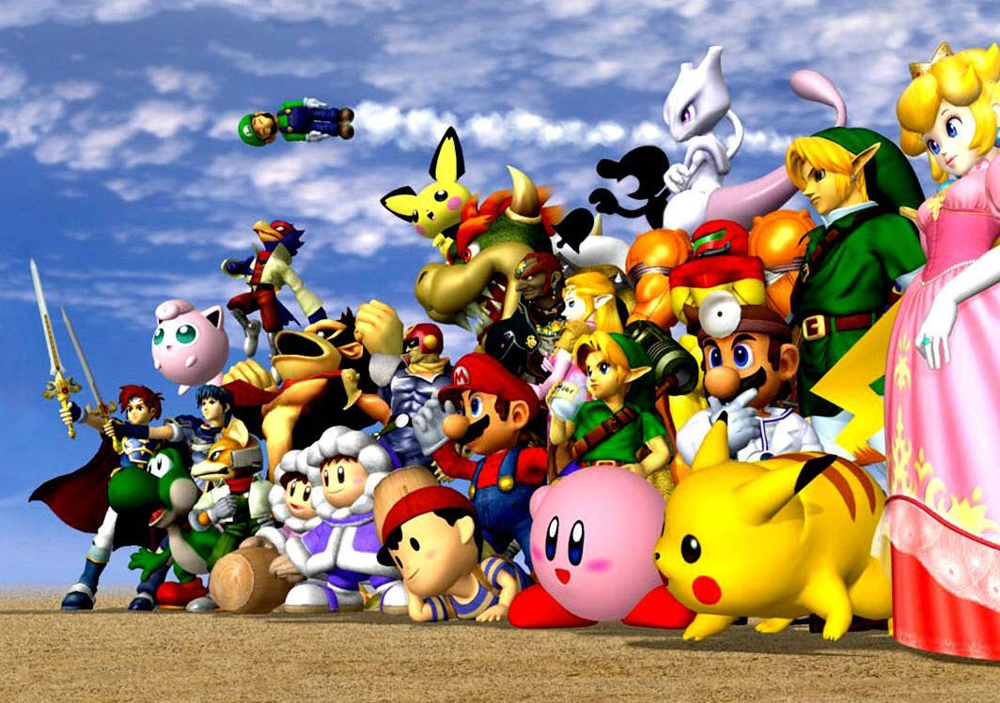
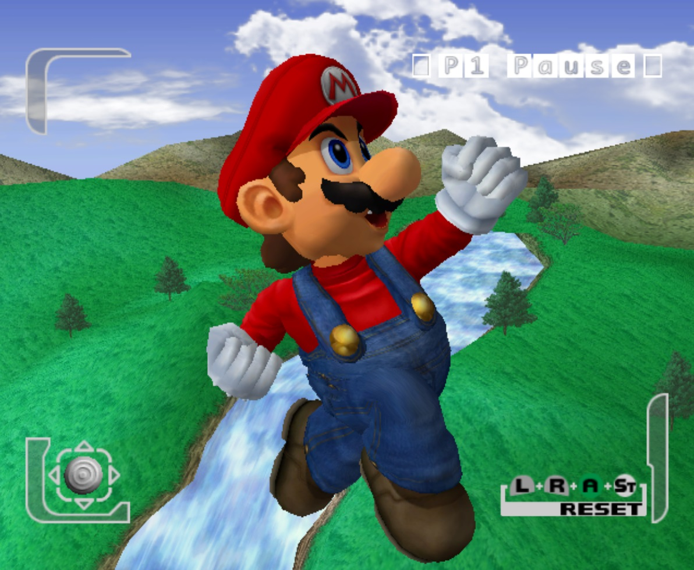
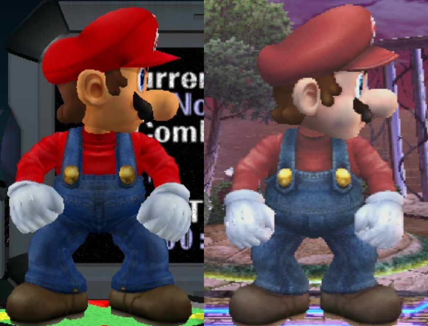
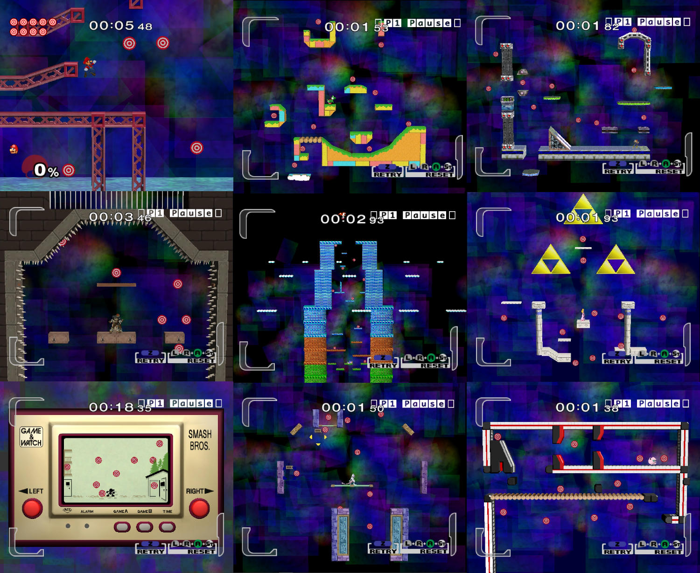

Hi there! welcome to the first entry thing! This is the first ever "chronicle entry" on my website. I dont really know how to do this kind of thing, I just thougth it'd be cool if I had a chill cool website where i can put all my games and stuf on for people to check out and also put some extra stuff in here too. Sorry if the text is too small btw, I'm not sure how exactly this stuff scales.
This isn't my first time doing HTML stuff, but it's been a really long time. like 3 years since I've written a single HTML script. Pretty long. But its not like I really need to know everything or stay in really in the loop with thing since not only do I not need a super complex site, but HTML is super easy to pickup and learn. Almost too easy, to the point where you can't really even call it programming. But it does require a fair bit of problem solving to create a nice site.. and you are technically communcating with the computer when you make a site, so by definition it is programming.
But enough of all that! I'd like to set in stone here what I want to be talking about, why I made this site to begin with, and other things. First of all, this "Dot Chronicle" is basically a dev diary. A place where you can see my thought process on many things, see some behind the scenes stuff on what I'm doing and just see what kind of random jargain im getting myself into on a day to day basis. If you wanted to know super personal details about me like my last name, my real world location, who my parents or siblings are or other things like that, Im afraid you came to the wrong place. The dark web may be a better place to search. And for why I'm making this site... well.. the "objective" reason is like I said earlier. a place to put my stuff. But deep down, it's a bit more complex and emotionally charged. You'll probably come to your own conclusion as to what I mean in a few years. Also I don't have a schedule for any of this :))))))) . I'm just doing stuff that I think others might like, when I like! I'd like to say "Weekly entries~!!!" or some kind of organised time thing, but I really can't guarantee if I'll even continue to update this site after a certain point.
So with that out the way, let me start with what I'm currently working on!
Right now, I'm developing a Touhou Project fan game. Actually, I'm making two of them, plus on Sonic fangame that I've put on pause until next year. The other touhou fangame is a psuedo sequal to the first touhou game, Highly Responsive to Prayers. It's being made in scratch but I kinda hit a dead end in terms of motivation, so I'll put it on hold until 2027. This year though, I want to fully develop and release the first game though. It's a 3D Action-Adventure game, made in godot 3.5. There aren't many 3d touhou fangames in general, fewer that are in that style, so I want to make mine as strong of a game as I can. Maybe not "big", but one that can be remembered and Atleast enjoyed for maybe 3-10 hours. That's the range of content I want to offer. The kind of game you can "beat" in an afternoon, but one that'll be replayable and multiply the playtime drastically. A game that's fun enough so that the player can want to find every secret, beat every boss, collect every collectable, and do as much as they can by their own will. One that can be digested by casual , simple gamers but can be deeply played by more hardcore ones. That is what I want to make.
I want to talk about some of the games that have really been inspiring me, and also some of my less secret plans for the game. So just recently, I've been playing a lot of PS2/Gamecube era games and it really impresses me just how well some of them hold up visually without having to expend as much graphical power as modern games. The models aren't seamlessly smooth like modern graphics, but not as rough and jagged as PS1/N64 era games (though those games are appealing in their own right). The texture are clean, but not crispy clean like PS3 era. Also, this was the last generation of consoles to use fixed-function GPUs, so the visuals are still restricted, but developers mastered the art of getting a creative vision to transition nicely over to the hardware, but at the same time, lots of new found power was available giving them more freedom than ever..
I think I'll just spill the beans on the game I've been drooling for now~! Super Smash Bros. Melee, is in my opinion, the best Gamecube game.
...
That's not a very controversial opinion though ^^;
Well, my reasons for loving it so much aren't actually the same as most people. While others might mention competitive scene, that glitches, oversights, quirks, and their childhood, I was born too late to have it be my "childhood". I only actually played it last month. I had always just thought to myself, "Meh, it's only good for it's multiplayer. The singleplayer looks boring.." but then for some reason, I just decided to give it a try.. and man. It's somehow become one of my favourite video games of all time. Period. Even though I don't deny that the multiplayer does make up a large part of what makes Melee.. Melee, I will say that the singleplayer experience is still extremely fun. I unlocked all the characters by myself and did about 75% of the event matches, so I think my judgment on this game is relatively definitive (Maybe I should have tried going for all trophies too lol...). For starters, the visuals... Are purely stunning!!!
Okay.. that may be a bit of an exaggeration, but you have to admit, it does have a very timeless look and feel.

Main Promotional poster for Super Smash Bros. Melee
All the characters, especially the humanoid ones, are rendered beautlfully with bright, well contrasted colors. They have lots of detail, but not to the point of being super realistic. The best part about the poster I put up here is that it's almost 100% real time rendered, meaning that the visuals there are nearly 1 to 1 with the actual game! The best way I can put it is "Playable 90s style 3D Render". It's really pretty, but "pretty" isn't the only thing you can use to describe it. Rich, clean, soft, etc.
I think the thing that really makes me fall in love is the fusion of realistc characters and cartoony/anime style ones. Let's look at 2 images of Mario for example.

On the left, we have a screenshot from Smash Melee, taken by me. And on the right is the official promotional 3D render for Super Mario 64. I think these two images, when compared side by side demonstrate my point very well. The Mario in the '64 screenshot is the usual Mario we all know and love. Red hat, blue overalls, brown shoes, the classic look. Of course, this render is an adaptation of the 2D artwork we saw in games like Super Mario Land, Super Mario Bros. 3, etc, so it doesn't deviate from those at all (And it doesn't need to!). Just the Mario 64 render, Mario sports the same look, but it's when you look closer, that's when the difference is made clear. His overals have got a denim texture, with visible brown thread sewn along the appropriate edges. Shiny buttons reflecting the surrounding environment that hold the overalls nicely. The classic red shirt, defined with soft shadows where it folds, especially at the neck. His well fitted white gloves, now with a slight blue hue on the shadows. All these things come together to stimulate your eyes in just the right ways, but the details don't distract from the design. When zoom way back out, it's still Mario. Our koopa-stomping plumber friend. But I CANNOT, emphasize enough, how important the colors are too. Take a look at these two images.

On the left is Mario doing his taunt in Melee, and on the right is him doing his up-taunt (Both screenshots taken by me.) I think this comparison highlights my points excellently as well. Apologies for the especially low resolution in the Smash Brawl picture, the pause camera in Brawl really doesn't let you zoom in that much. It's pretty clear looking at both of these pictures, which one has more appealing colors (though I guess I should use the "saturated" as a better word since this is all subjective). One thing that stuck out to me when playing Brawl for the first time was how much more advnaced the lighting engine is. Unlike Melee which usually lights scenes with just 1 light source, Brawl takes advantage of more within the average scene, and ontop of that, it Brawl also has more coloured lights! This is most obviously shown in Battlefield thanks to the realtime day-night cycle. Although more impressive, I've found that the more limited, simple, "one white light-source" style of Melee helps bring out the baked details in the textures a whole lot more. Besides that, the texture in general are far less staturated in Brawl, which it doesn't make up for with contrast resulting in a very dull, dry look. Compare this to Melee, which is much more confident in it's colour composition. Don't get me wrong, I love Brawl almost as much as Melee.. but damn, does Brawl look boring.. I mean, the style looks alright on Snake, Sonic and Samus, but on everyone else looks really.. bleh.
The visuals of course, aren't the only reason I love Melee so much. The second reason is the Singleplayer Experience.
I think Melee has the highest quality singleplayer experience out of every Smash game.
..Now THAT'S an unpopular opinion! Let me explain though.
There's a reason I used "highest quality" instead of "best" to describe Melee's singleplayer. Let's look at the general "stats". Super Smash Bros. Melee has 25 playable characters, almost 200 collectable trophies, 28 stages, 7 singleplayer modes: those being Classic mode, the classic arcade style experience, Adventure mode, a new mode that has you exploring different unique stages and battling foes under new special conditions, Multi-Man Melee, a mode that makes you fight your way through 15 - 100 "wireframe" characters or fight as many wireframes as you can within a 5 minute, 15 minute, or endless time.. OR Cruel Melee that let's you fight an unlimited amount of extremely unfair, unbalanced and overpowered foes. Home-run Contest, a mode where you have to hit a sand bag as much as you can within a 10-second time limit before using your Home-run bat to hit it as far as possible, Target-test, the same mode as Smash 64 but now with far more characters, Event Matches, a mode that features 50 (+1) somewhat unique battle that face you against foes with different attributes depending on the "narrative" (pretty hard to call it that) of the event, and finally All-Star mode, another new mode that has you fight every character in the game's roster while keeping you damage percentage through each battle, only giving you 3 recovery hearts to recover your damage between each battle.
Quite the amount of stuff to do, no? Indeed, but it pales in comparison to Smash Bros. Brawl, Smash 4 or Smash Bros. Ultimate's amounts. But like I said, it's the quality of it that makes it so good. Let's use Target Test as an example. In Melee, target test has 1 unique stage for every single character in the game, so 25 in total. Each of these tests your ability to use the character's moves to destroy all the targets in each stage. Compare that to Smash Brawl's target test, where every character has to go through the same 5 levels, with each of them now being tiered by difficulty. This.. is boring. This technically multipies amount of ""cOnTeNt"" in the game by 5 since every character has their own high score for each course, combined with the increase in total playable characters, all the while decreasing the amount of time spent actually developing the courses... this makes every character feel less special in my opinion. Without having a "personal" stage for every character, each course course has to accomodate for everyone by having targets in a more linear, simple, easy to reach position that can be hit by all the characters. What's worse is that now they have items too, so if a character has difficulty doing a certain part, they can use the set items given as a kind of boost, making it so everyone is on an equal playing field but it also ruins the potential for the player to find the best character for difficulty level too. Like I said, more content, but in the process it's been stretched out too far an became repetetive and boring in the process. Oh and remember how each course would also look different for each character too? that's been lost in the process.

Okay.. I should probably stop comparing this to Brawl because it's starting to sound like I hate it ^^;... (I like it too!! I swear!!!!!)
Continuing on to the things I like... hmm... -ah! Adventure mode!
Although it's very primative compared to future games, it's got such an.. "adventurous" feel! First we start from the Mushroom Kingdom, we run from the start to the end in a cool side-scroller style that feels like we're playing a New Super Mario game.. before that series ever even existed ~! Then we battle Peach and Mario, but I'll let you in on a secret.. If you finish the stage when the Timer has the number "2" anywhere on it (Seconds, Minutes, anywhere really!) you'll see a secret (and very janky looking) cutscene where Luigi jumps on Mario's head and you'll fight Luigi instead of Mario! Melee is full of cool secrets and techniques, not just in competetive multiplayer, but in singleplayer too! Things continue like this, though there are some "meh" points. Like after you beat the two tiny Donkey Kongs, you fight.. Donkey Kong... or when you beat Kirby in Green Greens, you just fight a team of Kirbys with copy abilities....... on the same stage.. except now it's WAYY easiers.. yeah, not so fun.. Atleast there's a cool secret where if you manage to beat all of them in 30 seconds, you fight a giant Kirby as a secret boss of sorts. But there's still cool parts! Running to the end of the track in the F-Zero race track, trying not to get hit by the speeding vehicles.. finding your way through a giant, dark, Legend of Zelda themed maze.. fighting Samus and then escaping planet Zebes in a classic Metroid-style escape sequence! It's the simplicity that makes it endearing to me! I love it! But my favourite parts about it, are the last 2 areas. Battlefield and Final Destination. First, on Battlefield, you fight the Fighting wireframes. These are kinda a successor to the Fighting polygon team from Smash 64. Unlike them, there's only 2 variants. Male and Female. I'll talk about them later, but mechanically they're about the same as the polygons. After that, you get an eerie cutscene of Metal Mario and Metal Luigi, lifelessy falling from the sky onto a platform. The sudden shift to a creepy sound really captured my attention when I first played, but the way the two of them are depicted here was even more interesting to me. There's no dialogue from them. No silly goofy "haha!" moment. Two lifeless husks, falling from the sky, there only purpose being to fight, despite being shaped like the familiar Mario Bros. Creepy..
Watch the scene here.... (YouTube), Or here??? (Local)Of course, the usual Metal Mario music plays in the fight, returning the atmosphere to usual, but the game has one more thing up it's sleeve.. Final Destination..
But unfortunately this is where I have to end things off for now.. This entry has taken 2 days to write, and I don't really want to burn myself out right from the get-go..
So thank you so much for reading my ramblings! Please come back another time for another update!
Goodbye, and have a great time for the rest of your life!
Return to the Chronicle.